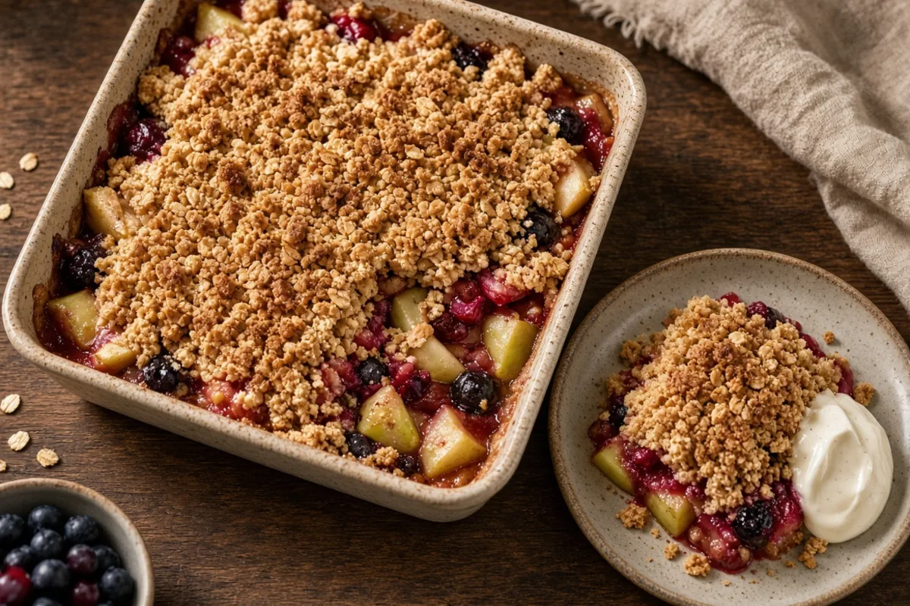
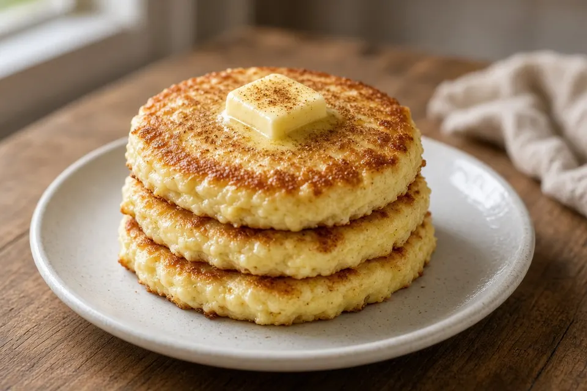
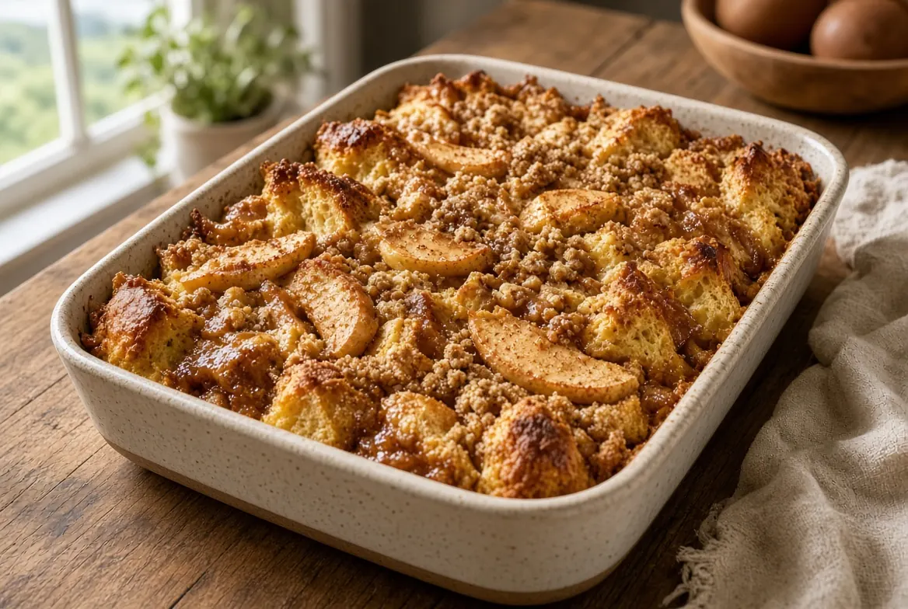

Carroll
Lowcountry Table
All recipes
Category
Breakfast & brunch
3 recipes ·
Browse all
Weekend dinners
Weekday dinners
Breakfast & brunch
Game day
Sides & salads
Breads
Healthy snacks
Dessert

Breakfast & brunch
High-Protein Apple and Berry Crumble

Breakfast & brunch
High-Protein Cottage Cheese Pancakes

Breakfast & brunch
Baked Cinnamon Apple Butter French Toast